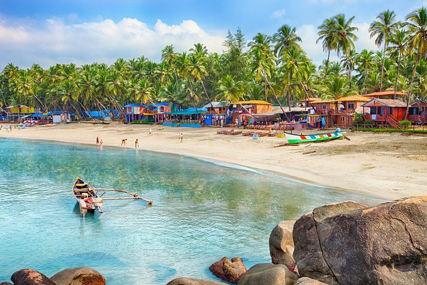
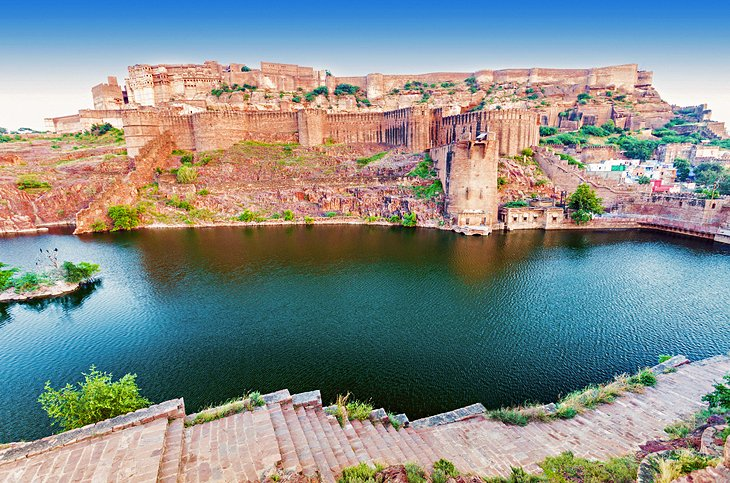
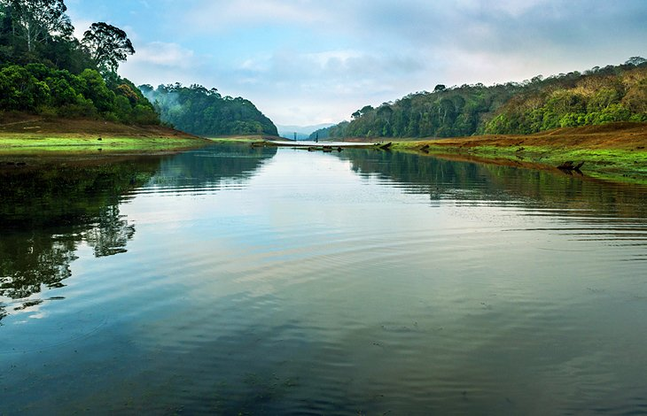

Taj Mahal

Perhaps India's most recognizable building, the Taj Mahal is also the world's most famous testimony to the power of love. Named after Mumtaz Mahal, the favorite wife of Emperor Shah Jahan, this most beautiful of mausoleums was begun upon
her death in 1631 and took 20,000 workmen until 1648 to complete.
Incorporating many elements of Islamic design including arches, minarets, an onion-shaped dome, and black calligraphy inlaid around the entrance, the Taj Mahal is largely constructed of white marble decorated with delicate inlaid floral
patterns and precious and semi-precious stones such as jade, lapis lazuli, diamonds, and mother of pearl.
The best time to visit is either at dawn or dusk when the atmosphere is brilliantly altered by the change in lighting. If possible, try to catch a view of the Taj Mahal's reflection from the far bank of the Yamuna River-it makes for a
memorable (and safe) selfie.
The Holy city of Varanasi

A major pilgrimage center for Hindus, the holy city of Varanasi has long been associated with the mighty Ganges River, one of the faith's most important religious symbols. Dating back to the 8th century BC, Varanasi is one of the oldest
still inhabited cities in the world.
It offers many reasons to visit, not least of them the chance to explore the Old Quarter adjacent to the Ganges where you'll find the Kashi Vishwanath Temple, built in 1780 (the New Vishwanath Temple with its seven separate temples is
also of interest).
Bathing in the Ganges is of great importance to Hindus, and numerous locations known as "ghats" feature stairways leading to the water where the faithful bathe before prayers.
All told, Varanasi boasts more than 100 ghats, the largest being Dasashvamedh Ghat and Assi Ghat (the latter, at the confluence of the Ganges and Asi rivers, is considered particularly holy). Also worth seeing is Banaras Hindu University,
established in 1917 and noted for its massive library with more than a million books, and the superb Bharat Kala Bhavan museum featuring fine collections of miniature paintings, sculptures, palm-leaf manuscripts, and local history
exhibits
Harmandir Sahib: The Golden Temple of Amritsar

Founded in 1577 by Ram Das, Amritsar is an important hub of Sikh history and culture. The main attraction here is Harmandir Sahib, opened in 1604 and still often referred to as the Golden Temple for its beautiful gold decoration. The holiest
of India's many Sikh shrines (it also attracts many Hindus and people of other faiths), the temple was built in a blend of Hindu and Islamic styles, its lower marble section featuring such flourishes as ornate inlaid floral and animal
motifs, while the large golden dome represents a lotus flower, a symbol of purity to Sikhs.
In addition to its splendid design, visitors are equally impressed with the temple's spiritual atmosphere, an effect enhanced by the prayers continuously chanted from the Sikh holy book and broadcast throughout the complex. Part of the
overall experience-and visitors are welcome to participate-is the chance to enjoy one of the 50,000 free meals the attraction serves up to visitors each and every day.
The Golden City: Jaisalmer

So named for the yellow sandstone used in most of its buildings, the Golden City of Jaisalmer is an oasis of splendid old architecture that rises from the sand dunes of the Thar Desert. Once a strategic outpost, today the city is filled
with splendid old mansions, magnificent gateways, and the massive Jaisalmer Fort-also known as the Golden Fort-a daunting 12th-century structure that rises high above the town.
In addition to its palaces, temples, and fine old homes, the fortress boasts 99 bastions along with massive gates leading to its main courtyard where you'll find the seven-story-tall Maharaja's Palace. Started in the early 1500s and added
to by successive rulers right up until the 19th century, the palace offers sections open to the public including areas beautifully decorated with tiles from Italy and China, and intricately carved stone doors, as well as a number of
Jain temples dating from the 12th to 16th centuries, each decorated with fine marble and sandstone images, palm-leaf manuscripts, and brightly painted ceilings.
Be sure to also check out the well-preserved 1,000-year-old library, Gyan Bhandar, with its many 16th-century manuscripts and antiquities.
The Red Fort, New Delhi

Built by Shah Jahan in 1648 as the seat of Mughal power-a role it maintained until 1857-the magnificent crescent-shaped Red Fort in New Delhi, named after the stunning red sandstone used in its construction, covers a vast area of more
than two square kilometers, all of it surrounded by a large moat. Highlights include its two largest gates: the impressive Lahore Gate (the fort's main entrance) and the elaborately decorated Delhi Gate, once used by the emperor for
ceremonial processions.
A fun part of a visit is exploring Chatta Chowk, a 17th-century covered bazaar selling everything from jewelry to silk garments, as well as souvenirs and food items. While you can explore the fort yourself, guided tours are offered and
provide a fascinating insight into the life and times of the Shah, including a peek into the stunning white marble Hall of Public Audiences (Diwan-i-Am) where he received his subjects.
Hot Tip: Try to stick around for the sound and light show held each evening featuring important events in the fort's history.
Amer Fort, Jaipur

Amer Fort (often also spelt "Amber") was built as a fortified palace in 1592 by Maharaja Man Singh I and has long served as the capital of Jaipur. Carved high up into the hillside, the fort is accessible on foot via a steep climb or by
shuttle rides from the town below (better still, let an elephant do the work). Highlights include Jaleb Chowk, the first courtyard, with its many decorated elephants, and the Shila Devi Temple, dedicated to the goddess of war. Also
of note is the adjoining Hall of Public Audience (Diwan-i-Am) with its finely decorated walls and terraces frequented by monkeys.
Other highlights include Sukh Niwas (the Hall of Pleasure) with its many flowerbeds and a channel once used to carry cooling water, and the Temple of Victory (Jai Mandir), notable for its many decorative panels, colorful ceilings, and
excellent views over the palace and the lake below.
Just above Amer Fort is Jaigarh Fort, built in 1726 by Jai Singh and featuring tall lookout towers, formidable walls, and the world's largest wheeled cannon. Be sure to also spend time wandering the walled Old City of Jaipur with its three
fully restored gates and splendid bazaars, as well as the delightful City Palace, a massive complex of courtyards, gardens, and buildings.
The Ellora Caves, Aurangabad

The famous monumental Ellora Caves were built between the 5th and 10th centuries by Buddhist, Jain, and Hindu monks, and make for an excellent excursion from Mumbai, some 300 kilometers to the west.
Now a UNESCO World Heritage Site, this remarkable collection of 34 carved monasteries, chapels, and temples-12 of them Buddhist, 17 Hindu, and five belonging to the Jain faith-were built in close proximity to each other, a reflection of
the religious tolerance that existed during this period of Indian history.
Of the Buddhist monastery caves, highlights include a number of shrines featuring carvings of Buddha and saints dating from the 5th to 7th centuries, as well as the stunning Carpenter's Cave, considered one of the finest in India.
The Hindu caves are much more complex and were carved from the top down, so scaffolding was not necessary. Of these, the best is the Kailasa Temple, an enormous rock-cut temple representing Mount Kailasa and requiring the removal of 200,000
tons of rock.
The Beaches of Goa

Long known within India as the "go-to" destination for those seeking a great beach holiday, Goa's beautiful western coastline, overlooking the Arabian Sea, has only recently been discovered by tourists from overseas.
Goa's more than 60 miles of coastline is home to some of the world's loveliest beaches, each with their own particular appeal. For those looking for peace and quiet, isolated Agonda Beach is a good choice, while Calangute Beach is by far
the most commercial and crowded.
For those in search of posh resorts, yoga getaways, and spa vacations, the beaches of Mandrem, Morjim, and Ashwem are fashionable among wealthy Indians and Westerners alike. Palolem is another popular option in a beautiful setting.
While in Goa, be sure to visit the Bhagwan Mahavir Wildlife Sanctuary. This superb attraction is home to thick forests and plenty of fauna, including deer, monkeys, elephants, leopards, tigers, and black panthers-as well as India's famous
king cobras-and some 200 species of birds.
Also worth a visit is Divar Island, accessed by ferry from Old Goa. Highlights include Piedade, a typical Goan village and home to the Church of Our Lady of Compassion with its interesting stucco work, Baroque plaster decorations, and
altars, as well as stunning views of the surrounding countryside.
Mahabodhi Temple, Bodhgaya

Bodhgaya, considered the world's holiest Buddhist site, attracts thousands of visitors each year, all drawn to participate with the resident monks in meditation and prayer. The focal point of this place of pilgrimage is stunning Mahabodhi
Temple, built next to the very spot where Buddha came to Enlightenment and formulated his philosophy on life. Constructed in the 6th century and restored numerous times since, the temple is topped with a beautiful pyramidal spire and
houses a large gilded statue of Buddha.
Also of interest is the site's pipal tree, a descendant of the original bodhi tree where Buddha meditated for seven days after the Enlightenment, said to be among the oldest and most venerated trees in the world (you'll know you've found
it when you spot the red sandstone slab marking the spot).
Mecca Masjid, Hyderabad

Construction of Hyderabad's Mecca Masjid, one of the world's largest mosques-and one of the oldest in India-began in 1614 during Mohammed Quli Qutub Shah's reign and took almost 80 years to complete. Large enough to accommodate 10,000
worshipers, this beautiful mosque's 15 enormous arches and pillars were each wrought from single slabs of black granite dragged to the site by huge cattle trains reputedly consisting of up to 1,400 bulls.
Taking its name from the bricks above the central gate that were brought here from Mecca, this impressive complex features highlights such as its main gateway, huge plaza, a large manmade pond, and a room that houses the hair of Prophet
Mohammed. Other notable features include inscriptions from the Quran above many of the arches and doors, the exquisite roof of the main hall, the cornices around the entire mosque structure, and the floral motifs and friezes over the
arches
Mehrangarh Fort, Jodhpur

Dominating the old city of Jodhpur, the massive Mehrangarh Fort, one of the largest fortifications in India, was built in the 15th century to safeguard the people of the famous "Blue City," as Jodhpur is still known - a name derived from
its indigo colored houses, painted blue to deflect the heat.
Built on top of a towering outcrop, Mehrangarh is an amazing feat of construction, its massive walls all but impenetrable. Access is via one of seven splendid gates, including Jaya Pol and Fateh Pol (the latter still bears scars from cannon
attacks).
Highlights of a visit include exploring the fort's fascinating network of courtyards and palaces, as well as a museum housing a splendid collection of artifacts related to the Maharajas. Be sure to spend time in the historic center of
Jodhpur itself, famous for its eight city gates, a lovely old clock tower, and numerous bazaars selling everything from vegetables to sweets, spices, and handicrafts.
Agra Fort

Built as a military structure in 1565 by Emperor Akbar with later additions by Shah Jahan, the stunning Agra Fort (also known as Agra's Red Fort) is an interesting mix of both Hindu and Muslim influences. Located a little more than two
kilometers from the Taj Mahal, the fort is entered through Amar Singh Gate with its low outer wall and dogleg design built to confuse attackers. Once inside, you'll see two large interlinked sandstone buildings, Akbari Mahal and Jahangiri
Mahal, the largest private residence in the complex.
Other highlights include the Khas Mahal (Private Palace), with its splendid copper roof, and the Anguri Bagh (Grape Garden), a jigsaw-patterned Mughal garden with numerous wonderful fountains and water channels as well as screens that
once offered a private area for the emperor and his entourage. Also of note is the octagonal Musamman Burj tower, which later served as Shah Jahan's prison until his death.
Mysore Palace

The sprawling city of Mysore is a delight to explore thanks to its eclectic mix of fine old colonial architecture; regal Indian palaces; and lush, well-manicured gardens. While those inclined towards shopping will enjoy spending time in
the city's famous silk and sandalwood bazaars, the main attraction is magnificent Mysore Palace.
Completely rebuilt in 1897 after a devastating fire, this beautiful three-storied palace features highlights such as its elegant square towers and domes; the many ornate ceilings and pillars in Durbar Hall; and the splendid Marriage Pavilion,
with its glazed floor tiles, stunning stained glass, artworks, and displays of jewelry (it's also where, on special occasions, the exquisite Golden Throne is exhibited).
For a real treat, be sure to catch one of the splendid light displays held each Sunday and during holidays, when the palace is illuminated by more than 90,000 lights. A fun way to explore the palace's massive grounds and gardens is as
part of a cycle tour, available free once inside.
Periyar National Park and Wildlife Sanctuary, Madurai

One of South India's most popular tourist attractions, Periyar National Park and Wildlife Sanctuary is centered around a lake built by British engineers in 1895 for irrigation and to provide water to the city of Madurai. Established in
1934, this beautiful park is home to numerous species of mammals, including a large free-roaming Indian elephant population, wild boar, otters, the lion-tailed macaque, and more than 20 Bengal tigers. Bird watching is a popular activity
with frequent sightings of species such as darters, storks, kingfishers, hornbills, and racket-tailed drongos, along with many interesting varieties of butterflies.
The best ways to enjoy the park's splendid mountain scenery are to take a lake cruise or guided jungle walk, the latter allowing visitors a chance to come face to face with elephant herds and observe other wildlife from watchtowers and
viewing platforms. Hot Tip: Be sure to stop at one of the many nearby spice, tea, or coffee plantations for a tour.
Mumbai: The Gateway of India

Standing an impressive 26 meters tall and overlooking the Arabian Sea, the iconic Gateway of India is a must-see when in Mumbai. Built to commemorate the arrival of King George V and his wife Queen Mary in 1911, this stunning piece of
architecture was opened with much pomp and ceremony in 1924 and was, for a while, the tallest structure in the city.
Constructed entirely of yellow basalt and concrete and notable for its Indo-Saracenic design, the Gateway of India was also the scene of a rather less jubilant procession of British soldiers in 1948 when India gained its independence.
These days, the huge archway provides a stunning backdrop that is as popular among locals as it is tourists. Hot Tip: After visiting the Gateway of India, pop over to the adjacent Taj Mahal Palace and Tower for a delectable High Tea,
a fun thing to do in Mumbai since this lovely luxury hotel opened in 1903.